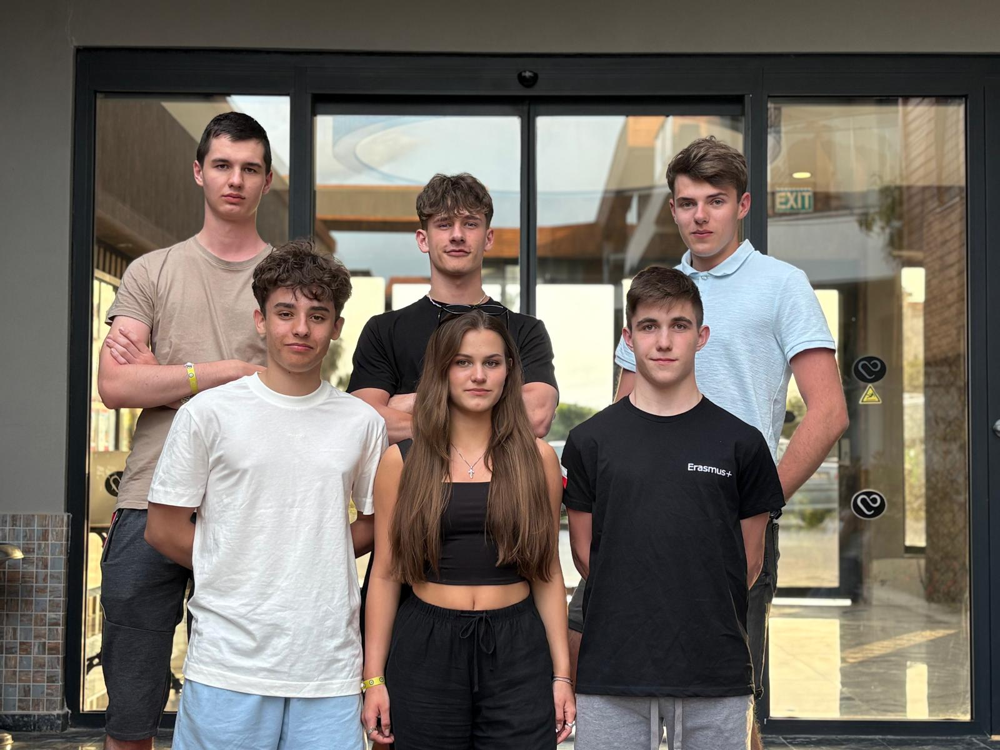

Diagnostyka i wykrywanie usterek
Uczniowie poznawali sposoby rozpoznawania awarii urządzeń AGD oraz układów klimatyzacyjnych i wentylacyjnych, ucząc się analizy objawów, oceny stanu technicznego oraz przygotowania sprzętu do dalszej naprawy.
Zespół Szkół Elektronicznych w Rzeszowie
Uczniowie kierunku automatyka odbywali praktyki w tureckich firmach serwisowych, poznając organizację pracy technicznej, diagnostykę usterek, obsługę urządzeń AGD oraz serwis systemów klimatyzacyjnych i wentylacyjnych.

Uczniowie poznawali sposoby rozpoznawania awarii urządzeń AGD oraz układów klimatyzacyjnych i wentylacyjnych, ucząc się analizy objawów, oceny stanu technicznego oraz przygotowania sprzętu do dalszej naprawy.
Podczas praktyk uczniowie obserwowali i wykonywali prace związane z demontażem obudów, wymianą wybranych elementów, montażem części zamiennych oraz przygotowaniem urządzeń do ponownego uruchomienia i testów.
Uczniowie uczyli się korzystania z dokumentacji technicznej, katalogów części i instrukcji serwisowych, a także poznawali sposób organizacji pracy w profesjonalnym serwisie oraz przygotowania stanowiska do realizacji zadań.
Ważnym elementem praktyk było czyszczenie urządzeń, przygotowanie narzędzi i materiałów, sprawdzanie poprawności działania systemów po naprawie oraz przestrzeganie zasad bezpieczeństwa podczas pracy serwisowej.
Beko Arçelik Yetkili Servisi to autoryzowany serwis urządzeń AGD marek Beko i Arçelik. Firma zajmuje się diagnostyką usterek, naprawą, konserwacją oraz obsługą serwisową sprzętu gospodarstwa domowego. W zakresie jej działalności znajduje się między innymi obsługa pralek, zmywarek, lodówek, piekarników oraz innych urządzeń AGD.
Podczas praktyk wykonywane były wstępne oględziny urządzeń, rozpoznawanie usterek oraz przygotowanie sprzętu do dalszej diagnostyki i naprawy. Do zadań należało także czyszczenie elementów, segregowanie części, przygotowywanie stanowiska pracy oraz obserwacja prostych czynności montażowych i testowania urządzeń po naprawie.
Uczniowie: Michał Bąkowski, Maciej Bogusz
Beko Arçelik Yetkili Servisi to autoryzowany punkt serwisowy zajmujący się diagnozowaniem usterek, naprawą i konserwacją sprzętu AGD marek Beko i Arçelik. Firma świadczy usługi serwisowe dla urządzeń takich jak pralki, zmywarki, lodówki, piekarniki oraz inne sprzęty gospodarstwa domowego.
W czasie praktyk uczniowie poznawali organizację pracy serwisu, przygotowywali stanowisko pracy, obserwowali identyfikację usterek oraz uczestniczyli w czynnościach związanych z czyszczeniem elementów, segregacją części i przygotowaniem urządzeń do dalszej diagnostyki. Ważnym elementem pracy było także korzystanie z dokumentacji technicznej i sprawdzanie działania sprzętu po zakończeniu naprawy.
Uczniowie: Filip Winiewski, Dawid Woźny
Gezer Teknik İklimlendirme (Bosch Yetkili Servis) to firma zajmująca się montażem, demontażem oraz serwisem układów klimatyzacyjnych i wentylacyjnych. Do zakresu jej działalności należą instalacja, konserwacja, przeglądy techniczne oraz naprawa urządzeń i instalacji.
Podczas praktyk uczniowie wykonywali zadania związane z przeglądami technicznymi, konserwacją, wykrywaniem usterek oraz przygotowaniem narzędzi i materiałów do pracy. Ważnym elementem było również sprawdzanie poprawności działania systemów po zakończeniu prac oraz przestrzeganie zasad bezpieczeństwa i właściwej organizacji stanowiska pracy.
Uczniowie: Bartosz Kliś, Zuzanna Siekaniec